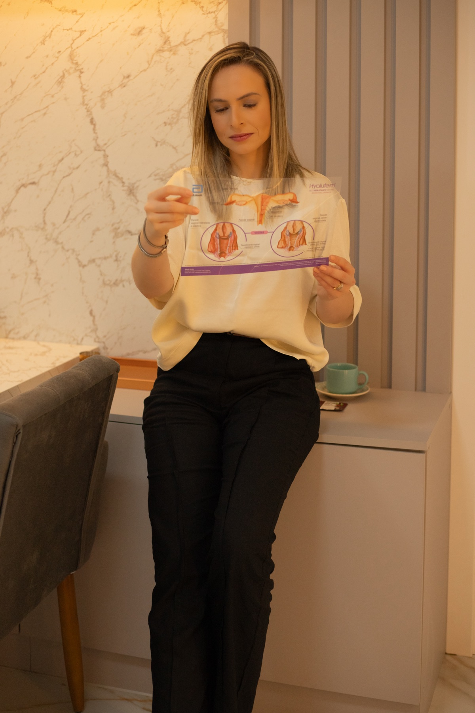

Ginecologia Regenerativa
Avaliação de alterações e queixas relacionadas aos tecidos íntimos femininos, considerando saúde, funcionalidade, conforto e possibilidades de cuidado conforme indicação clínica.
Falar sobre esta avaliaçãoGinecologia regenerativa, estética íntima e cuidado hormonal e metabólico com avaliação individualizada, atenção à saúde e respeito às necessidades de cada mulher.

A Dra. Hemmile Aguiar dedica sua atuação à saúde feminina, com atenção especial às questões íntimas, hormonais e metabólicas.
Seu atendimento considera a história clínica, as necessidades individuais e as diferentes fases da vida da mulher, buscando integrar avaliação médica criteriosa, orientação clara e acompanhamento humanizado.
Informação, escuta e avaliação médica individualizada para compreender necessidades e discutir possibilidades de cuidado.
Avaliação de alterações e queixas relacionadas aos tecidos íntimos femininos, considerando saúde, funcionalidade, conforto e possibilidades de cuidado conforme indicação clínica.
Falar sobre esta avaliaçãoAvaliação individualizada de questões estéticas e funcionais da região íntima, respeitando características anatômicas, saúde e objetivos de cada paciente.
Falar sobre esta avaliaçãoInvestigação e acompanhamento de alterações hormonais e questões metabólicas relacionadas à saúde feminina, incluindo diferentes fases da vida e o climatério.
Falar sobre esta avaliaçãoAbordagem médica que considera história clínica, hábitos de vida, saúde metabólica, fatores hormonais e necessidades individuais.
Falar sobre esta avaliaçãoA Dra. Hemmile atende ressecamento vaginal, líquen vulvar, fissura vulvar, dor na relação sexual e incontinência urinária, além de outras queixas relacionadas à saúde e à funcionalidade dos tecidos íntimos.
Tecnologias utilizadas: laser, radiofrequência, LED azul e vermelho.
Produtos utilizados: ácido hialurônico, toxina botulínica, fios de PDO, cristais de hidroxiapatita e ácido polilático.
As tecnologias e os produtos são utilizados pela Dra. Hemmile de acordo com a avaliação médica individualizada e a necessidade de cada paciente.
Falar sobre esta avaliaçãoA avaliação individualizada pode contemplar ninfoplastia, clareamento vulvar, peeling íntimo para foliculite, secativos e clareadores, lifting vulvar e harmonização vulvar, respeitando saúde, anatomia e objetivos de cada paciente. Também são avaliadas queixas de hiperidrose no sulco mamário, raiz de coxa e região infraglútea. As possibilidades de tratamento são discutidas somente quando houver indicação clínica.
Falar sobre esta avaliaçãoA Dra. Hemmile realiza acompanhamento para emagrecimento com estratégia individualizada, além de avaliar climatério e menopausa — incluindo fogachos, insônia, irritabilidade e ansiedade —, saúde sexual, queixas de libido e aspectos metabólicos.
Falar sobre esta avaliaçãoUma abordagem clínica que amplia a escuta e considera história de saúde, hábitos de vida, alimentação, atividade física, sono, bem-estar e fatores hormonais e metabólicos. A Dra. Hemmile oferece suplementação individualizada, definida de acordo com a avaliação e a necessidade de cada paciente.
Falar sobre esta avaliaçãoO cuidado é construído com informação clara, critério médico e respeito ao momento de cada paciente.
Compreensão do histórico, sintomas e objetivos.
Avaliação da necessidade de exames e discussão das opções de cuidado.
Orientações, conduta e seguimento conforme o caso.
Algumas situações podem motivar uma consulta. Elas não representam diagnósticos e devem ser compreendidas no contexto de cada paciente.
Fale com a equipe para tirar dúvidas sobre o atendimento e verificar a melhor disponibilidade.
Agendar pelo WhatsAppO atendimento, diagnóstico e indicação de tratamento dependem de avaliação médica individualizada.
Um espaço para compartilhar orientações educativas e novidades de saúde feminina. Para acompanhar as publicações da Dra. Hemmile, acesse o perfil oficial no Instagram.
Ressecamento, desconfortos e mudanças percebidas na região íntima são temas que podem ser conversados em consulta.
Ler no site →Os sintomas e as possibilidades de cuidado precisam ser avaliados conforme a história e o momento de cada mulher.
Ler no site →Publicações, orientações e informações da Dra. Hemmile Aguiar em um canal atualizado diretamente pela equipe.
Acessar @drahemmileaguiar →Conteúdos atualizados diretamente pelo perfil oficial no Instagram.
É uma área de atenção à saúde íntima que pode abordar queixas relacionadas aos tecidos e à funcionalidade da região íntima. As possibilidades de cuidado dependem de avaliação médica individualizada.
Ressecamento, desconfortos, mudanças percebidas na região íntima ou dúvidas sobre a saúde íntima podem ser motivos para procurar uma consulta.
Fogachos, insônia, irritabilidade, ansiedade, ressecamento vaginal e outras queixas podem ocorrer. A avaliação ajuda a compreender cada situação e discutir possibilidades de cuidado.
A médica considera história clínica, sintomas, fase da vida, condições de saúde e, quando necessário, a indicação de exames. A conduta é definida conforme o caso.
Não. A indicação, as limitações e os riscos de qualquer tratamento dependem de uma avaliação médica individualizada.
Podem ser acolhidas questões estéticas e funcionais, desconfortos, autoimagem e saúde íntima, sem pressupor um padrão anatômico ideal.
A consulta começa com escuta e avaliação do histórico, sintomas e objetivos. A necessidade de investigação, exames e acompanhamento é discutida de forma individualizada.
Em Curitiba, na Clínica Werka — Saúde & Longevidade, no Batel.
Clique em qualquer botão de agendamento para conversar com a equipe pelo WhatsApp.